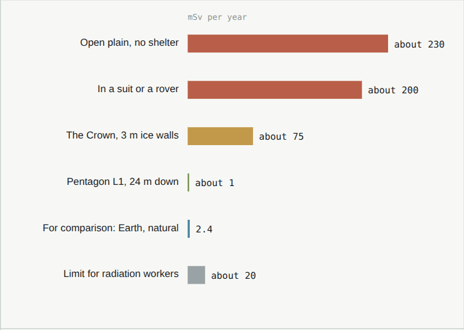

Shielding
Stopping the radiation with soil and water. On Mars it is not a wall but a matter of how much mass lies between people and the sky.
The doseWhat Curiosity measured
On the ground Curiosity measured about 0.64 mSv a day, and 1.8 mSv a day on the way. Six months each way and 500 days on Mars add up to about 1 sievert, more than NASA's career limit of 600 mSv. Most of it comes from cosmic rays, which are hard to stop; bursts of particles from the Sun come more rarely but can be intense. See hazards.
How to stop itLight atoms, and plenty of them
Light atoms shield best: water, plastics and soil stop the particles without making many new ones, as heavy metals such as lead do when cosmic rays smash into them.
On the way, a ship can put its water and food round a small shelter where the crew waits out a solar storm.
On the ground, soil: a few metres remove most of the dose, and about 16 m bring it below what people receive on Earth. So people sleep and work under cover, and go out for hours, not days.

Jim sleeps below ground, in the master suite down, under 16 m of soil, and spends about six hours a day in the Crown, behind window slots that block the harsh sun: about 20 mSv a year. The Pentagon, in the design plan →
SourcesWhere the numbers come from
- D. M. Hassler and others (2014), Mars' surface radiation environment measured with the Mars Science Laboratory's Curiosity rover. Science 343, 1244797. doi:10.1126/science.1244797
- C. Zeitlin and others (2013), Measurements of energetic particle radiation in transit to Mars on the Mars Science Laboratory. Science 340, 1080. doi:10.1126/science.1235989
- NASA, NASA-STD-3001 (2022): the career limit of 600 mSv; UNSCEAR (2008): Earth's average natural dose, 2.4 mSv a year.
- The doses in Arcadia's buildings are the design's own estimates (design plan, chapter 03).